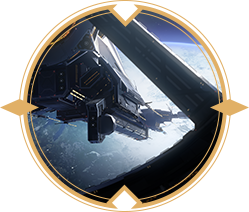

《崩坏：星穹铁道》1.6版本PV：「庸与神的冠冕」
《崩坏：星穹铁道》卡芙卡角色PV：「戏剧性反讽」
《崩坏：星穹铁道》1.3版本PV：「天镜映劫尘」
《崩坏：星穹铁道》动画短片：「玄黄」
《崩坏：星穹铁道》丹恒•饮月角色PV：「归去来」

《崩坏：星穹铁道》符玄角色PV：「法眼无遗」
《崩坏：星穹铁道》1.4版本PV：「冬梦激醒」
《崩坏：星穹铁道》镜流角色PV：「剑出无回」

《崩坏：星穹铁道》托帕&账账角色PV：「专家教学」
《崩坏：星穹铁道》1.5版本PV：「迷离幻夜谈」
《崩坏：星穹铁道》1.6版本PV：「庸与神的冠冕」
《崩坏：星穹铁道》卡芙卡角色PV：「戏剧性反讽」
《崩坏：星穹铁道》1.3版本PV：「天镜映劫尘」
《崩坏：星穹铁道》动画短片：「玄黄」
《崩坏：星穹铁道》丹恒•饮月角色PV：「归去来」
《崩坏：星穹铁道》符玄角色PV：「法眼无遗」
- 
-

-
主控舱段
空间站的核心区域，主控舱段具备脱离基座的独立星际航行能力。
监控与防御系统
分布于主控舱段入口处与两侧。由众多监控画面组成的巨大影像屏幕，能够观测空间站外围的全景视角，分别配备障碍阻击操作台与防护投射操作台，可用于狙击不明威胁与产生反重力防护罩。
监察域
用于监控能源反应堆、各个舱段实时状态的设备。监察域与主控制台共同组成了主控舱段的核心区域，建立了观测、监控、防御、攻击四位一体的决策系统。
-
接待中心
位于基座舱段，太空电梯接引区后方，空间站「黑塔」的门面。不少仰慕者慕名而来，穿过星辉洒落的廊道，却止步于此，只得向阔步入内的科员投以艳羡的目光。
医疗舱室
空间站引以为豪的医疗设施，号称只要人还有口气在，总有办法能够救活。科员们的研究总是伴随着不可预知的风险，因此空间站的医疗舱室总是人满为患。
无明之间
黑塔女士的私人藏室。常年封锁，只有黑塔本人拥有出入其中的资格。原本在科员之间也仅仅只是作为一个茶余饭后的谈资，却在空间站遇袭期间，因不明原因被人打开。
月台
若危机不可管控，主控舱段难逃一毁，科员将通过主控舱紧急通道向支援舱段移动。外来的救援舰船也须在此停泊。
-
-

-
上层区
贝洛伯格位于地表的城市部分，被称为上层区，也是「筑城者」视事治理的所在地。在这里，城市的气温恒定，人们依然维持着文明的日常。
永冬铭碑
上层区的地标之一是位于广场中央的雕塑。
感念于「筑城者」为人类辟除寒冬、拯救文明的伟大功业，人们将这一事迹塑成了巨大的雕像。它代表文明在与无情永冬的对抗中取得了最终的胜利。
克里珀堡
以「存护」之星神命名的宏伟堡垒，亦是「大守护者」的居所和指挥中心。
-
搏击俱乐部
在辛勤劳作后的傍晚看上一场刺激的拳赛，便是许多下层区人最为奢侈的消遣。
娜塔莎的诊所
下层区唯一的诊所。装病的家伙会被女医生赶出诊所，只因她的时间必须留给真正需要救治的人们。
下层区
贝洛伯格位于地底的中空城区结构，被称为下层区。森然耸立的岩壁中埋藏着旧世界的遗物和建筑，巨大的支撑柱连接着地上。
-
-

-
玉界门
人流往复，各怀心思，只有穿过玉界门了才算正式抵达了仙舟「罗浮」。

司辰宫
罗浮天舶司的总部，飞檐如艏的巍峨殿宇。飞行士与导航者们在此间忙碌不休。
迴星港
仙舟内洞天间的往来几乎全部依靠星槎成行。而「迴星港」正是星槎制造的重地。
-
金人巷
长乐天的美食商业街，游客们来到这里享受美食，感受街头文化。
绥园
于数百年前狐人巧匠打造的园林洞天，以供游客们休憩闲游、赋诗宴饮——如今「绥园闹鬼」谣言不胫而走。
鳞渊境
波月古海，持明胜境。数千年前，为遏制建木生长，持明族以此洞天为容器，封印了建木玄根。
-